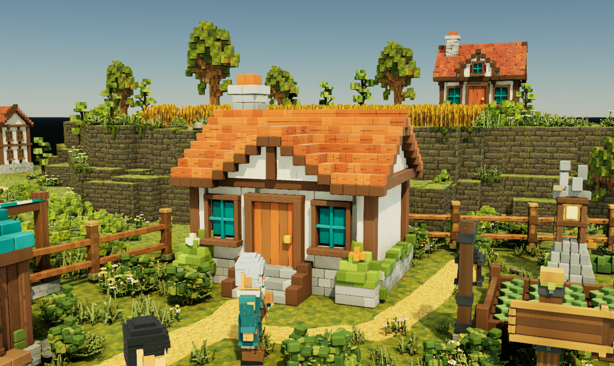
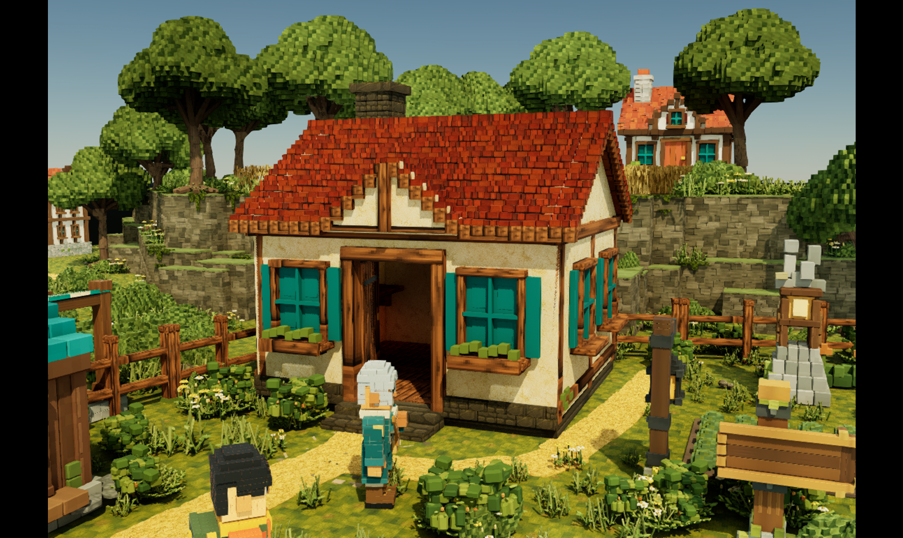
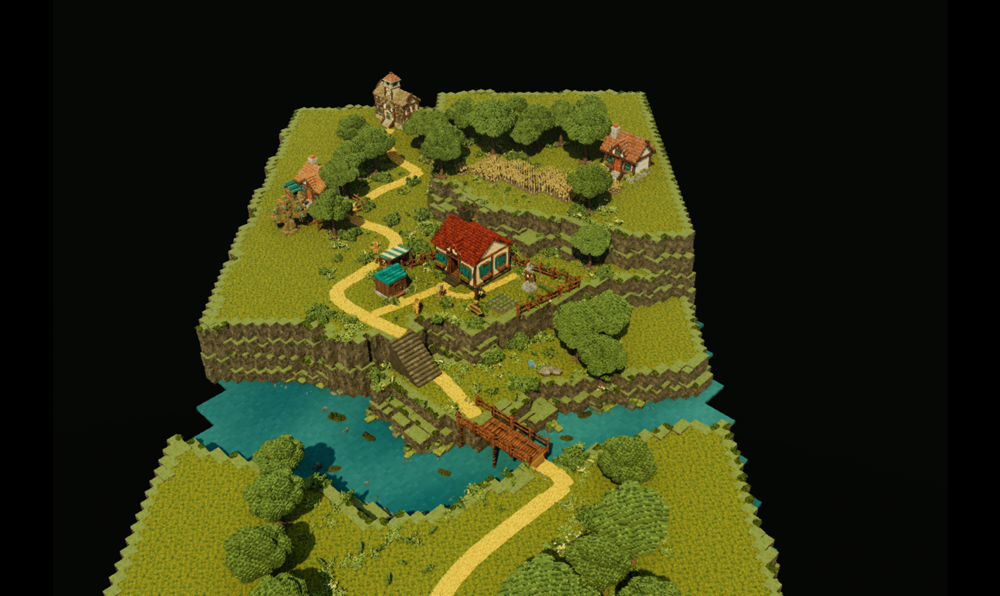

Homestead art pilot · Unreal Engine
A starting home.
A world to grow into.
A complete, explorable home establishes the material language for Terrarium: warm plaster, worn terracotta, timber and moss-covered stone.
Pilot built · available for review

BeforeAfterBuilt for the walk
between places.
The cottage, terraces and crossing now form a connected starting home. Its materials and reusable parts provide a foundation for larger settlements.

A home you can enter
A complete cottage with a real doorway and interior, matching fence spans and a modular timber bridge. Fine geometry works alongside UV-mapped weathered surfaces.
Terraces with a route through
Moss cliff, fine cliff column, worn path and stone stairs connect the landscape. Earthy stone and grass remain distinct from the warm plaster walls.
Planting with structure
Broad trees, shrub ground cover, wheat and garden patches add smaller angular forms and clustered variation around paths and occupied ground.
Close enough to notice.
Ready to step away.
Every pilot family has three implemented mesh LODs. These fixed-camera views make their changing shapes visible without changing the composition.

Architecture uses authored FBX chains. Landscape uses Unreal mesh reduction. Materials remain assigned at every level, with explicit screen-size thresholds.
These captures compare individual mesh levels. They do not by themselves establish smooth automatic transitions or stable fine textures during approach and retreat.
What the pilot
has demonstrated.
Movement, implementation and performance are recorded separately. The receipts describe the checks and their practical limits.
Playable traversal
- Cottage · enter, walk inside, exitPassed
- Terrace stairs · climb and descendPassed
- River bridge · cross and returnPassed
The possessed explorer used movement input with gravity and collision active. The route harness checked arrival, elevation and walking mode. This is actual movement evidence, separate from source-model dimensions.
WASD and mouse-look controls are implemented. Physical held-key input has not been manually verified through the available editor tool.
A local twenty-second sample
848 PIE frames after five seconds of warmup, at a 1,526 × 910 viewport. The maximum includes a hitch; the typical frame time does not erase it.
Measured in the local Unreal editor on a Ryzen 9 5950X and Radeon RX 6950 XT. The sample includes editor overhead and does not split CPU and GPU time. It is not a packaged-game benchmark or a budget for districts and cities.
One home is
the beginning.
Four supplied references establish a shared theme across settlement sizes. The eventual city is one place among many; this pilot establishes the starting home.
This is an art and traversal foundation for the starting home. It does not deliver a finished open world, a city, settlement-growth gameplay or a proven multi-city streaming system. Visual approval and broader world budgets remain ahead.
Read the pilot notes ↗